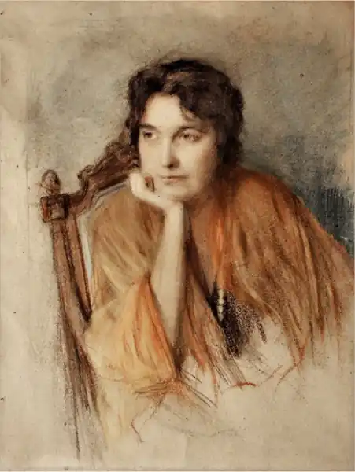
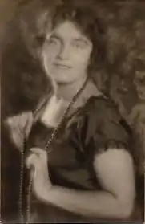

Народилася 25.04.1900 р. у Києві. Її мати – відома письменниця й громадська діячка Людмила Старицька-Черняхівська, донька Михайла Старицького, а батько – Олександр Черняхівський, професор-медик Київського університету Св. Володимира.
Писати поезії і перекладати Вероніка Черняхівська почала рано. Досі вважалося, що дебютувала вона в альманасі "Гроно" (1920), але вдалося виявити її антибольшевицький вірш "Мати" у Кам'янець-Подільській "Новій Думці" (1919). Переклала також "Місячне сяйво" Джека Лондона (1927), "Олівера Твіста" Чарльза Діккенса (1929), "Прорість (Жерміналь)" Еміля Золя (1929), вірші французьких, німецьких та іспанських поетів.
У жовтні 1929 р. Вероніку Черняхівську вперше арештували у "справі СВУ". Проте у січні 1930-го її звільнили. Вдруге її арештували 9.01.1938 р. і звинуватили в "шпигунській контрреволюційній діяльності". Приводом послужило те, що в 1928–1929 рр. Вероніка, працюючи у Наркоматі охорони здоров'я референтом-перекладачем, разом із батьком перебувала у відрядженні в Німеччині. Там вона вийшла заміж за німецького підданого Теодора Геккена. Незабаром вони розлучилися, але цей шлюб виявився фатальним. 21.09.1938 р. В. Черняхівську засудили до розстрілу. Вирок виконали 22.09.1938 р. Батьків про це не повідомили і бідолашна мати ще 15.11.1940 р. пише листа до Берії з проханням повідомити долю її доньки: "З огляду на те, що Вам підпорядковані усі місця ув'язнення, я благаю Вас дати відповідні розпорядження щодо виявлення місця її перебування і переведення в Київ для перерозслідування її справи. Відправною точкою для розшуку може бути м. Томськ, бо в червні 1939 р. ми одержали від начальника одного з томських таборів повідомлення про те, що донька моя, Черняхівська-Ганжа Вероніка Олександрівна, перебуває в ув'язненні за адресою: м. Томськ, а 6 листопада того ж року ми отримали сповіщення із психіатричної лікарні м. Томська, що донька наша відмовляється взяти посилку, надіслану їй за вищевказаною адресою. Отримавши сповіщення із психіатричної лікарні, я негайно виїхала до Томська, але в лікарні мені відповіли, що хвору вже виписали, а прокурор м. Томська, до якого я звернулася за роз'ясненням, сказав мені, що донька моя вибула з етапом в Наринські чи Марійські табори. У Марійських таборах її не було, а в Нарин у зв'язку із зимовим періодом я поїхати не змогла. На цьому мої відомості уриваються". За життя Вероніка Черняхівська не видала жодної збірки власних віршів, всі вони залишилися в рукописах…